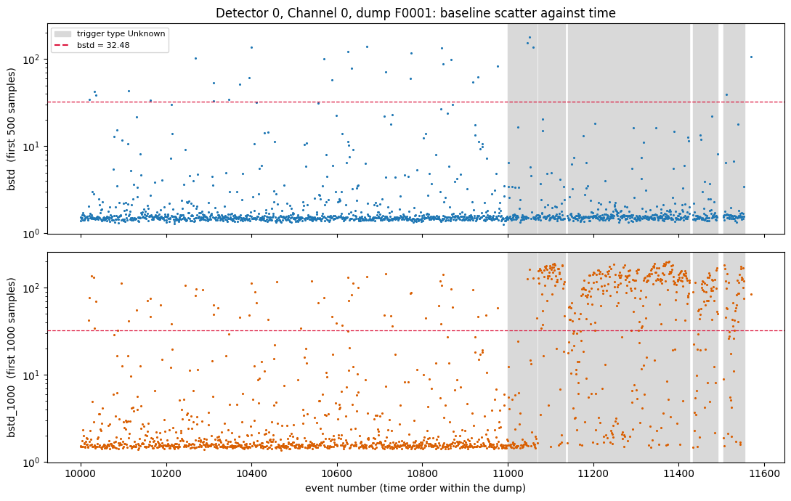

bstd_1000 have so many more high-bstd traces than bstd? (series 07221203_2025, dump 1)07221203_2025_dump1_bstd_time.ipynb — everything below. Pinned to f99edaa.python/ — pulse_io and pulse_quantities.bstd / bstd_1000 (see Note 1a). Pinned to f99edaa.Note 2 found many more high-bstd traces with the 1000-sample window than with the 500-sample one (25% vs. 2% above bstd = 32.48 over all 1517 traces of Detector 0 / Channel 0). Two possible explanations:
Starting point: bstd and bstd_1000 plotted against time. Events are numbered in time order within a dump (checked: strictly increasing for these traces), so the event number is used as the time axis.
bstd and bstd_1000 against event number
Unknown. Dashed line: bstd = 32.48.The dump has two distinct parts. Events 10000–10999 (1000 traces, all trigger type Physics) look alike in both panels: mostly quiet, with a sparse scatter of high values. From event 11000 on, the recorded trigger type alternates between runs of Unknown events (8 runs, 49–76 events long, 509 traces in all) and single Physics events. Inside the Unknown runs bstd stays quiet while bstd_1000 jumps to about 100 or more for most traces.
| Region | Traces | Median bstd | Median bstd_1000 | % bstd > 32.48 | % bstd_1000 > 32.48 | Ratio |
|---|---|---|---|---|---|---|
| Events before 11000 (all Physics) | 1000 | 1.53 | 1.61 | 2.7 | 5.9 | 2.2 |
| From 11000 on, trigger Unknown | 509 | 1.56 | 78.20 | 0.8 | 62.7 | 79.8 |
| From 11000 on, trigger Physics | 8 | 12.5 | 12.5 | 1.0 | ||
| All traces | 1517 | 2.1 | 25.0 | 11.8 |
Of the 379 traces with bstd_1000 > 32.48, 59 (16%) come from events before 11000 and 319 (84%) from Unknown-trigger events after it.
Physics traces, the 1000-sample window has 2.2 times as many high-bstd traces as the 500-sample one (59 vs. 27), close to the naive factor of 2. The small excess is in the direction expected if earlier pulses have more time to raise the scatter, but with counts this small it does not establish that.Unknown-trigger runs from event 11000 on, where the ratio is about 80 and no random-placement argument applies. There the 500-sample window is quiet (median 1.56, the same as before) and the 1000-sample window is loud, so whatever raises the scatter begins after sample 500 and before sample 1000 in most of these traces. This is inferred from bstd alone; the onset sample itself has not been measured.Unknown means is not established. Its coincidence with the change in bstd_1000 is an observation, not an explanation..csv timestamps have only 57 distinct values (one-second resolution), spanning 02:25:47 to 02:26:45 UTC on 4 Dec 2022, so they cannot order events within a second.Physics traces come after event 11000, too few to compare with the earlier Physics ones.Unknown-trigger traces to see where the excursion starts, and whether it is a fixed sample.Unknown trigger type means, and whether the same alternation appears in dumps 2–5, other channels and other series.